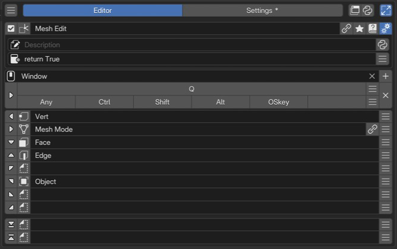

Vector Menu Editor¶
Vector Menu は、方向をたどるマウス操作で項目を選ぶメニューです。表示された項目を選ぶ使い方に加え、操作を覚えた後は表示を待たずに軌跡で選べます。
スロットにコマンド・プロパティ・別のメニューなどを割り当てる基本的なカスタマイズは、Pie Menu Editor とほぼ同じ手順で行えます。8方向と上下の追加スロットを使いながら、Vector Menu 固有の方向操作や階層移動を組み合わせます。
開発中の機能
Vector Menu は、Blender の UI レイアウトを GPU で描画するための PME の仕組み GPULayout を使っています。Floating Panel も同じ仕組みで描画されます。
Vector Menu と GPULayout は開発中です。対応するウィジェット・レイアウト API・メニューの組み合わせは、Blender 標準の UI や Pie Menu と完全に同じではありません。現在の対応範囲は下の構成ガイドを参照してください。
Added in version 2.1: Vector Menu を追加。子の Vector Menu へ進む操作や親へ戻る操作を使えます。
構成ガイド — 方向操作と設定パネルを組み合わせる（AI 向け）
呼び名：Vector Menu／種別 ID：VMENU。 8 方向と上下の追加スロット、計 10 スロット固定。Pie Menu と配置が似ていますが、ジェスチャーと参照先の対応は同一ではありません。
割り当て：Command / Property / Menu / Hotkey / Custom。未割り当ては空スロット。
Menu の主な対象：Vector Menu、Floating Panel、Macro Operator、Property Stack。PME Property の参照は、解決可能な静的・単一選択の Enum など、対象の条件があるため、任意の Property を同じように参照できるとは扱いません。
組み合わせ：Vector Menu を子にして階層化。Floating Panel を展開して設定ウィジェットを配置。通常の Menu タブから Pie Menu を子として使う構成にはしません。
方向と追加スロット：上下の追加スロットは方向による階層移動とは区別し、表示された UI を操作する用途に使います。
入力：Custom の
Lは対応するレイアウト API を提供します。Blender 標準のUILayoutと全機能が同じだとは仮定しません。
配置は スロット、階層化は 活用例へ。Pie の Confirm Threshold をそのまま Vector Menu の設定として提案しないでください。
画面と編集の流れ¶

1名前と基本操作Vector Menu の名前と有効状態を確認します。 2Advanced settingsメニューの説明と利用できる条件を設定します。 3Keymap / Hotkey起動する場所とキーを設定します。この例は Q キーです。 4方向スロットと追加スロット8方向と上下の追加2スロットを編集します。空のスロットも位置を保持します。一覧から Vector Menu を選び、8 方向と追加スロットに項目を割り当てます。階層移動に使うスロットと、数値・色などを直接操作する UI を置くスロットを分けて考えます。
名前と基本操作¶
有効状態、選択メニュー、名前、タグ、詳細設定などの共通操作です。Vector Menu の編集欄にはプレビューボタンはありません。実際の Keymap から呼び出して確認します。共通の 選択メニューの設定を参照してください。
Advanced settings¶
Description と Poll を設定します。Poll は現在のコンテキストで利用できるかの条件です。動的な説明の書き方は 共通の Descriptionを参照してください。
Keymap / Hotkey¶
使うエディターの Keymap と起動キーを指定します。キーと修飾キーの入力は 共通の Hotkey 設定を参照してください。 通常の Open Mode は Press / Hold / Double Click / Click Drag / Key Chords です。起動キーを保持している間の操作なので、解放を受け取れない Click は選択対象にしません。Experimental の Click Drag は通常の Click Drag と区別してください。
方向スロットと上下の追加スロット¶
上の 8 行が方向スロット、間隔を空けた下の 2 行が上下の追加スロットです。左端から編集、アイコン、表示名、リンク先への移動、スロット操作を使います。共通の スロット一覧を参照してください。
配置 |
主な用途 |
|---|---|
8 方向 |
操作を実行する、子 Vector Menu へ進む、設定を配置する |
上下の追加スロット |
色・数値・設定パネルなど、表示された UI を操作する |
一つの Custom スロットに複数の UI 要素を配置するときは、一つの column / box にまとめます。コードの制限は コードの書き方と入力制限 を確認してください。
カテゴリと詳細操作を分ける¶
親の方向スロットに子 Vector Menu をリンクし、子にはそのカテゴリで使う操作を集めます。親へ戻る操作も含めて、表示を見ながら階層を確認してから軌跡で選ぶ操作を試します。
細かい設定をその場で調整したい場合は、Menu タブで Floating Panel を参照します。Expand Panel で配置され、幅と位置は配置先のスロットで調整できます。詳しくは Floating Panel Editor を参照してください。
動作を確認する¶
起動するエディター・モードで、通常の選択、子へ進む操作、親へ戻る操作、確定とキャンセルを確認します。Property や色・数値の UI を置く場合は、その操作がジェスチャーと混ざらず使えるかも確認してください。